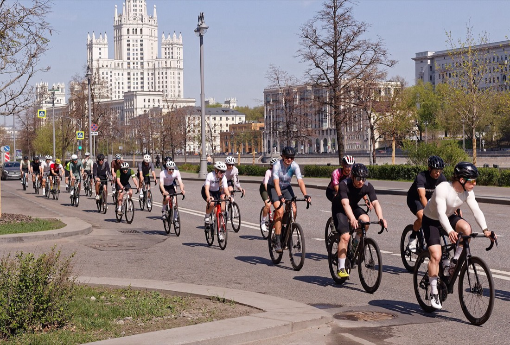

Нижегородская область
Лыжные гонки
Зима в Подмосковье — идеальный тренажёр выносливости: холод, рельеф, длинная дистанция. Работаем над техникой конькового и классического хода, экономией сил и сезонной базой.
05 — дисциплины
Начинаем с одной дисциплины, которая ближе. Дальше — по сезону. Плавание входит как часть триатлона.
Нижегородская область
Зима в Подмосковье — идеальный тренажёр выносливости: холод, рельеф, длинная дистанция. Работаем над техникой конькового и классического хода, экономией сил и сезонной базой.

Москва · набережная
Самый точный инструмент управления нагрузкой: мощность, пульс, каденс. Здесь видно всё — и перегруз, и недоработку. Шоссе, разделка, длинные выезды за город.

Сочи · Чемпионат России
Полный цикл: плавание, велосипед, бег. Дисциплина для тех, кому нужен результат, который нельзя подделать. Готовим к конкретному старту — от спринта до полной дистанции.